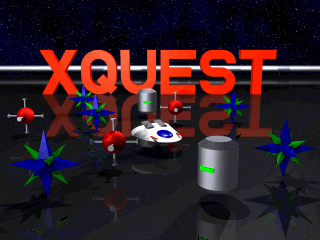
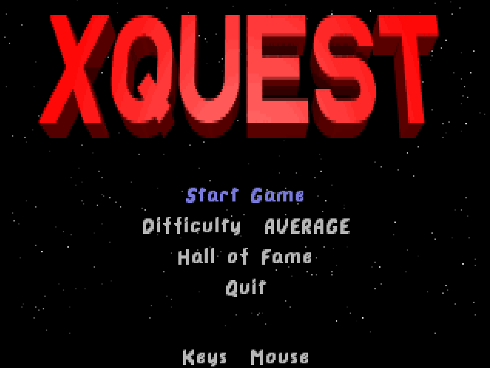
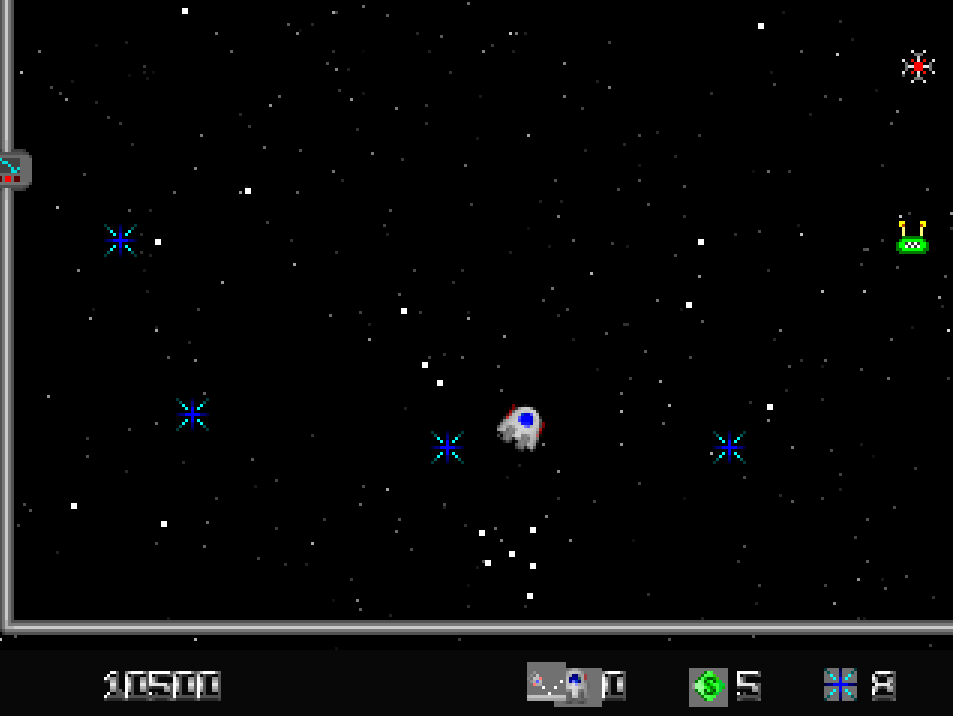
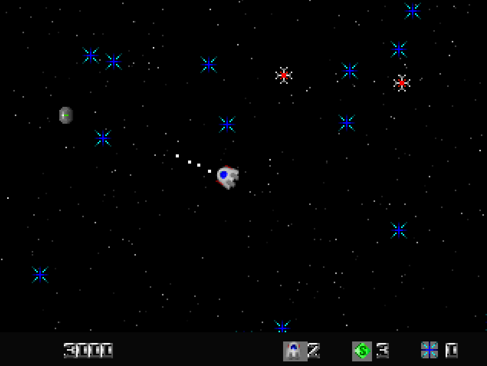
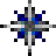
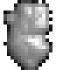
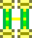
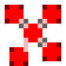
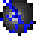

The actual 1994 title screen, pulled straight from the original xquest.gfx data.
Running today, natively, in SDL2



Twenty seconds of it, actually running
Level 4 or thereabouts: crystals, mines, and the exit gate up top. Captured straight from the port's own demo playback, frame by frame at the original 320×240, so it is exactly what the engine draws.
The story, unchanged since 1994
“The invasion fleet of the hideous Mucoids is hurtling towards the Earth, intent on blasting it into tiny steaming shreds of radioactive grit, and only your ship, armed with our latest top secret Super Kill-o-Zapper Atomic Phaser Photon Laser Cannons can… hang on, sorry, wrong game. You're a jolly little ship dingus which shoots around a rather abstract landscape collecting little gem thingies, while avoiding mines. Boring, you say? Well, we kept the Super Kill-o-Zapper, and added LOTS of things to blow up. Happy?” - the original XQuest manual, Mark Mackey, 1994
What's actually preserved
This isn't a remake, a reimagining, or "inspired by." It's a line-for-line faithful port: the same momentum-based flight physics, the same 50 hand-built levels, the same 18 enemy AIs, the same pixel-accurate bitmask collision that the original DOS code used - running natively via SDL2 on Windows, macOS and Linux instead of Mode X VGA and a DOS box.
Enemies (a sample), straight from the original sprite sheet





Powerups
| Icon | Effect |
|---|---|
| Shield | Absorb one hit, ship survives |
| MultiFire | Each shot fans into three |
| AimedFire | Missiles auto-lead the nearest enemy |
| HeavyFire | One-hit kills, any enemy HP |
Play it
Grab a build from the Releases page (Windows installer, macOS .dmg, Linux AppImage / .deb) - every build includes the full game, ready to play. Or build it yourself, on any of them:
git clone https://github.com/sandbranch/xquest-sdl.git
cd xquest-sdl
cmake -B build
cmake --build build
./build/xquestRequires SDL2, CMake 3.16+, and a C99 compiler. Full controls, difficulty tiers, and the complete enemy/powerup reference are in the README.